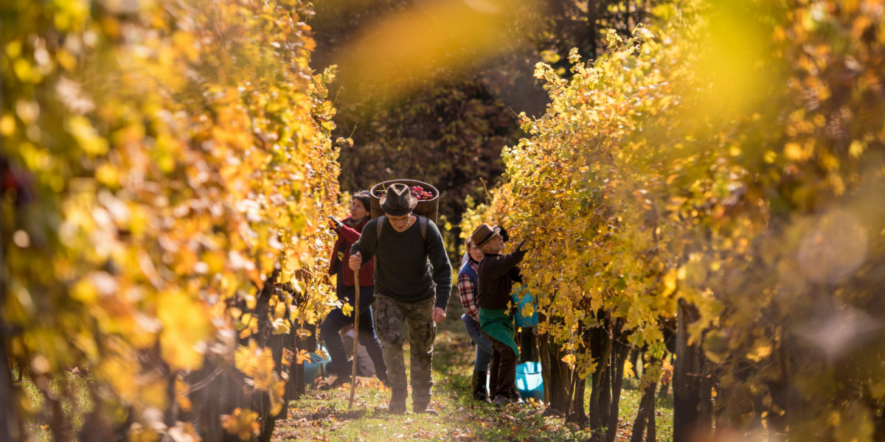

Vinogradnistvo ima v sloveniji globoke korenine, ki segajo vse tja do rimskih casov. slovenci smo doslej pridelali na miljoine litrov izvrstnega vina in se danes je vinogradniska tradicija zapisana v zavest skoraj vsakega sedmega slovenca.
Predvsem vzhodni del slovenije je posejan z vinskimi trtami, na zahodu pa se vinorodno obmocje razprostira od obalnega pasu globoko v zaledje mediteranske slovenije . V sloveniji imamo 14 vinorodnih okolisev in 3 vonorodne dezele. Vsaka izmed dezel po svoje zacini svoje vino. na okus vplivajo sestava zemlje, podbenje in vinarske tradicije.

Copyright Damjan Petkovsek